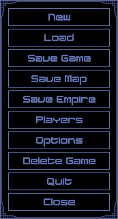

File Menu Window

| This window allows you to access the main file functions of the game. From here you can Load and Save Games, as well as save the current map, save your empire, and change game options. | ||
| None |
| New | Selecting this button will start a new game. You will be asked if you are sure you want to cancel the current game. If you decide to start a new game, the Game Setup - Players Window will be displayed. | |
| Load | This button will allow you to load a game. If there is currently a game in progress, you will lose that game. The Load Game Window will be displayed. | |
| Save Game | This button will allow you to save the current game. When pressed, the Save Game Window will be displayed. | |
| Save Map | This option allows you to save the current map to a file. With the map saved to a file you can use it again for future games. | |
| Save Empire | This option allows you to save your current empire to a file. Saving your empire allows you to use it again in future games (and retain your experience points). | |
| Players | Selecting this button will display the Player Computer Control Window. This window allows you to change which players are under computer control or not. | |
| Options | This button will display the Options Window. | |
| Delete Game | Selecting this button will display the Delete Game Window which will allow you to delete saved games from your hard drive. | |
| Quit | This option will quit the game and return you to Windows. | |
| Close | This selection will close this window and return you to the Main Window. |
| None |